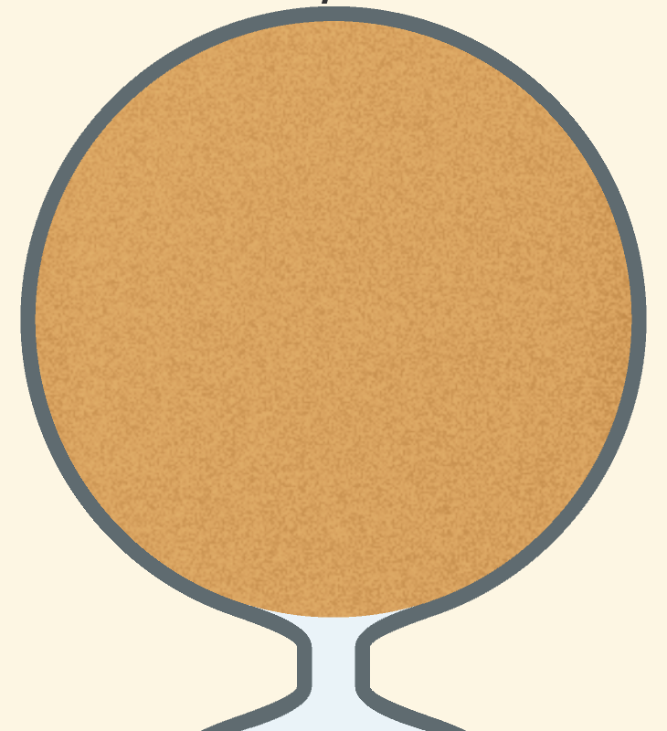
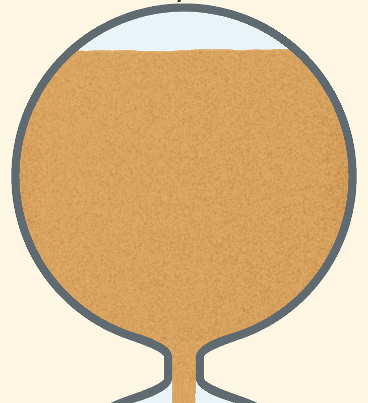
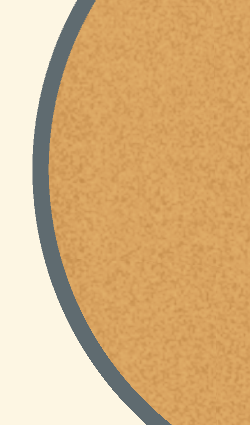
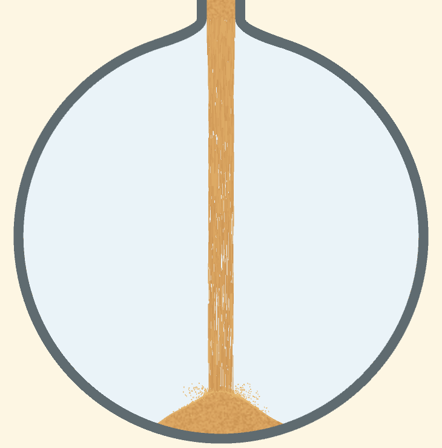
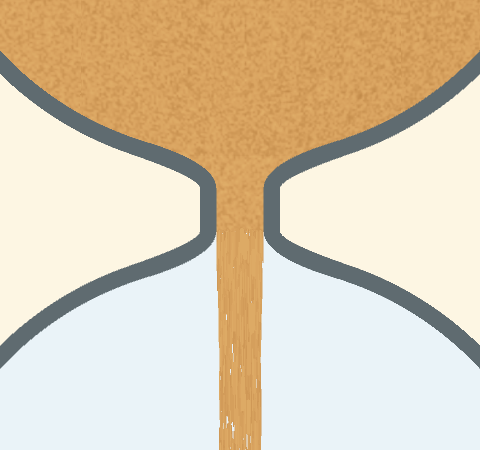
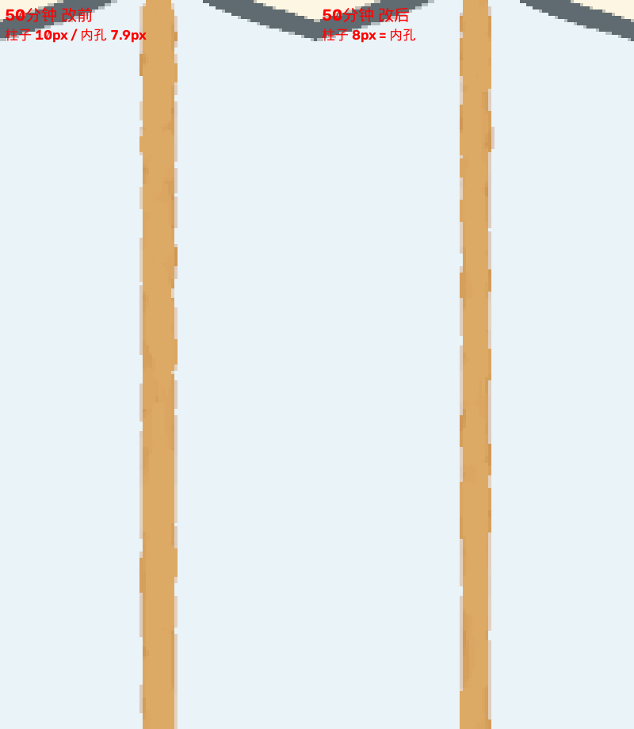
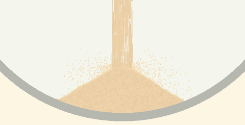
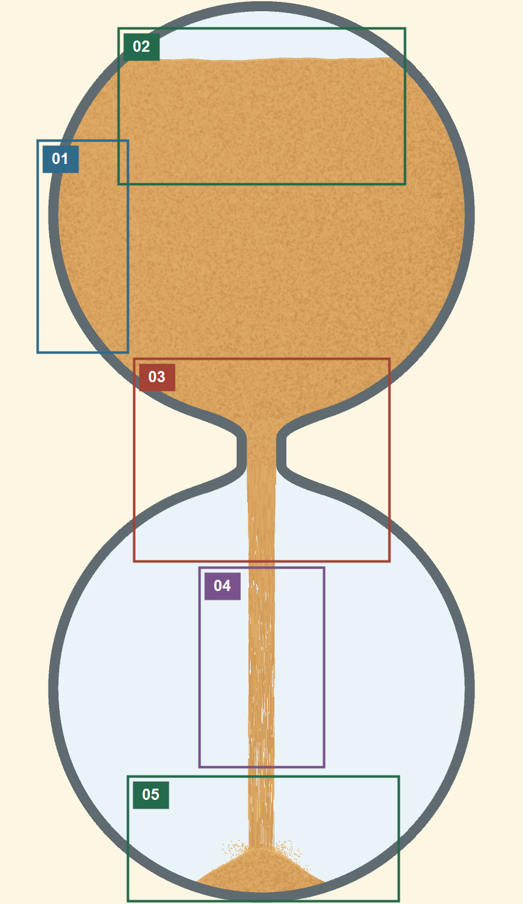

1. 上沙
先看整团上沙像不像正在减少的储沙体，再检查各进度的形状、内部运动和边缘。上球全貌与局部纹理不能互相代替。
U00整体：一团有体积和颗粒层次的储沙体
进度：未开始、约 10% 进度、约 50% 进度、约 90% 进度、最后数秒及全部在途沙落地
条件：使用正常显示尺寸看整个上球，保留完整球壁、沙面、球底和颈部入口；先不放大纹理。

U00 · v2.96 初始上球全貌，50 / 50。完整球壁、沙体及颈部入口同屏；裁自原图，没有补画。
U00 · v2.96 开局附近，48 / 50。顶部空腔露出、沙体延续到颈部；中段、末段及整体动态缺证据。应当看到什么
- 正常尺寸下首先读到一整团沙：填充范围明确，内部有细碎明暗，表面与内壁能分清；既不是平色色块，也不是满屏杂乱噪点。
- 未开始：沙体接近球顶，下方尚未出现下落沙柱；开始后顶部空腔逐渐露出，沙体向颈部供沙。
- 中段：比早期明显少，上方空腔扩大，沙面和贴壁轮廓共同说明剩余沙量；不能把 50% 时间直接规定为球高的一半。
- 末段：剩余沙向球底和颈部附近收拢，最后上球排空；具体沙面是否凹陷及凹陷程度，需要对应进度的有效实图确认，不能用开局平沙面代替。
- 观看时感觉是沙量逐渐减少，不是整团沙上下平移、突然缩放、周期性换贴图或某一块永久悬空。
怎么测
- 先用全图比较未开始、约 10%、50%、90% 和排空后的上沙，看填充范围与上部空腔的变化。
- 正常速度播放全过程，确认体积变化、自由沙面、颗粒质感和颈部供沙能同时成立；再放大定位问题。
需要留下的证据
- 各进度的完整上球图及同次运行全图；中段、末段目前缺图
- 正常速度的完整过程录像；局部裁图只作补充
关联自动检查：finish、rendering、geometry；人工：visual。这里只是关联，不代表自动完整覆盖。
还要连带看：U01 不同进度的沙量与轮廓 · U02 动态：下移、扰动与纹理刷新 · U03 边缘：沙面上沿与球壁外缘 · UN00 整体：上沙与颈内沙属于同一团连续供沙 · C00 整体：全沙漏按同一进度完成储沙、流动和积沙
局部图示与专项表现
U01不同进度的沙量与轮廓
进度：未开始、开始到首次落地、约 10% 进度、约 50% 进度、约 90% 进度、最后数秒及全部在途沙落地
条件：同一周期、配色、档位和实际尺寸，记录 elapsed/duration 与画面显示；不从整数倒计时反推精确进度。
U01 · v2.96 初始形状，50 / 50。保留整个上球，不从局部纹理推断沙量。U01 · v2.96 开局附近形状，48 / 50。只有这两个阶段；10%、50%、90%、末段和排空图待补。 怎么测
- 保存初始、约 10%、50%、90%、末段和排空后的全图及上沙裁图。
- 先比整体沙量，再比沙面高度、凹陷和左右轮廓；长短周期分别检查。
应当看到什么
- 初始沙体接近球顶；开局露出上部内腔；中段沙量下降并保持贴壁；末段向底部与颈部收拢，最终上球空。具体凹陷形态由同条件实图及有效标准确认。
- 上沙随进度减少，不能长时间无故停住、增加或整块跳变，不能为了接通颈部临时制造悬空沙块。
需要留下的证据
关联自动检查：finish、physics；人工：visual。这里只是关联，不代表自动完整覆盖。
还要连带看：U03 边缘：沙面上沿与球壁外缘 · UN01 空间接缝：沙体沿内腔连续收拢 · UN02 时间接缝：开局与末段衔接 · C03 短长周期的最后一段
U02动态：下移、扰动与纹理刷新
进度：开始到首次落地、约 50% 进度、约 90% 进度
条件：固定默认档位，采集带时间戳的连续帧；同时看整个上球和内部纹理，不把粒子运动当作沙体纹理运动。
U02 · v2.96 上沙动态的观察范围：整个上球。此处仅为单帧，不证明下移连续或没有刷新闪烁。U02 · 同一开局帧的内部纹理。连续录像、相邻帧及旧刷新时刻前后证据待补。 怎么测
- 50 秒或更长周期连续观察至少 20 秒，覆盖每秒和旧 16 秒刷新点附近；不足 20 秒的短周期记录整局，不强行等待到完成后。
- 检查颗粒是否自然变化、是否整幅突然换纹理或完全冻结；前后版同条件比较。
应当看到什么
- 没有周期性的整体闪烁、硬切或无缘由的重新抽样。
- 纹理变化与沙面下降协调，不能靠冻结所有变化掩盖刷新问题。
需要留下的证据
- 连续录像及时间戳
- 原始相邻帧或帧间差异，窗口只取上沙
关联自动检查：rendering；人工：visual。这里只是关联，不代表自动完整覆盖。
还要连带看：L02 动态：堆顶、坡面与纹理 · S02 动态：速度、前缘与连续性 · X03 未改区域、物理等价与性能
U03边缘：沙面上沿与球壁外缘
进度：约 10% 进度、约 50% 进度、约 90% 进度
条件：把自由沙面上沿和左右贴壁边缘分开看，使用原始分辨率局部图。
U03 · v2.96 上球全宽：同时看自由沙面上沿、左右贴壁轮廓及球底，不能只验一侧。
U03 · 开局左壁细节。只用于定位边界；其他进度、右壁及起伏两端档位仍需对照。 怎么测
- 逐阶段查看上沿起伏、凹陷、亮带和遮罩。
- 查看左右圆弧边缘，确认起伏最高点也被正确裁切。
应当看到什么
- 上沿不变成锯齿墙或规律刷新的硬台阶，明暗带不浮在沙体外。
- 贴壁边缘与玻璃内壁一致，不出现月牙缝、漏到外壁的小帽或多余描边。
需要留下的证据
关联自动检查：geometry、rendering、grain-levels；人工：visual。这里只是关联，不代表自动完整覆盖。
还要连带看：UN01 空间接缝：沙体沿内腔连续收拢 · L03 边缘：左右坡面、球底与玻璃 · X02 实际尺寸、转屏与资源打包
2. 下沙
先看整个下球里是否出现合理的积沙过程，再看堆顶、坡面、纹理和贴壁。不能只看落点的一小块。
L00整体：落地积沙逐渐形成与容器协调的沙堆
进度：未开始、开始到首次落地、约 10% 进度、约 50% 进度、约 90% 进度、最后数秒及全部在途沙落地
条件：看完整下球、整条沙柱和下球球底；与 U00 使用同次运行。
 L00 · v2.96 初始下球全貌：空球，没有沙柱或小堆。
L00 · v2.96 初始下球全貌：空球，没有沙柱或小堆。
L00 · v2.96 开局附近下球全貌：球底小堆、落沙与两侧空腔同屏；中段、末段及终态图待补。应当看到什么
- 未开始下球空；第一批沙到达球底后才形成小堆，而不是开始按钮一按就凭空填满。
- 早期：中间小堆落在球底上，堆顶和两侧坡面可辨；主体不能是悬浮三角形。
- 中段：积沙量增加，堆面抬高、底部向两侧展开，落点随实际堆面调整；不是只把早期小堆拉高成一根尖刺。
- 末段及终态：积沙逐渐适应下球内腔，仍有沙体和玻璃的层次；全部在途沙落地后稳定保留，不突然清空或继续无限增高。
- 远看先能分清整体沙堆，近看再能分清颗粒和飞溅；飞溅不遮成一团浓雾，纹理细节不能代替正确的大形。
怎么测
- 按空球、首次落地、约 10%、50%、90%、全部收尾顺序比较完整下球。
- 正常尺寸播放录像，看堆顶、两侧展开、球底贴合与上方落沙是否像同一个积累过程。
需要留下的证据
- 完整下球各进度图和上下球同帧全图；中段、末段目前缺图
- 从首次落地到终态的录像
关联自动检查：finish、geometry、splash；人工：visual。这里只是关联，不代表自动完整覆盖。
还要连带看：L01 不同进度的沙堆形状 · L02 动态：堆顶、坡面与纹理 · L03 边缘：左右坡面、球底与玻璃 · SL00 整体：落沙、积沙和飞溅共同形成一个落地过程 · C00 整体：全沙漏按同一进度完成储沙、流动和积沙
局部图示与专项表现
L01不同进度的沙堆形状
进度：未开始、开始到首次落地、约 10% 进度、约 50% 进度、约 90% 进度、最后数秒及全部在途沙落地
条件：与 U01 使用同一次运行；同时记录上下沙和在途沙，不能强行认为上沙减少量当帧全部到达下球。
L01 · v2.96 未开始的下球，作为空球形状对照。L01 · v2.96 开局附近的小沙堆。首次落地过程、10%、50%、90% 及终态形状待补，不把小堆拉伸图当中段。 怎么测
- 保存空球、首次落地、早期小堆、中段、末段及完成后下球图。
- 比较堆顶、坡面、底部展开和最终沙量，检查单调增长与有限飞行延迟。
应当看到什么
- 初始下球空；首次落地后出现靠近球底的小堆；中段堆高和左右展开增加；末段适应玻璃内腔，完整收尾后保留合理终态。
- 积沙不无故变少、突然长高或把早期小堆拔成尖山；不能提前截掉实际堆顶或把在途沙算作已经落地。
需要留下的证据
- 同一次运行的上下球全图
- CI 沙量与收尾原始日志，注明逻辑推进
关联自动检查：finish、physics；人工：visual。这里只是关联，不代表自动完整覆盖。
还要连带看：U01 不同进度的沙量与轮廓 · SL01 落点与实际堆面一致 · C03 短长周期的最后一段
L02动态：堆顶、坡面与纹理
进度：约 10% 进度、约 50% 进度、约 90% 进度
条件：单独取下沙窗口，区分堆面轮廓、内部底纹、表层标记和飞溅；不得用静止沙堆去测沙柱流速。
L02 · v2.96 下球动态的整体观察范围，包含两侧坡面和球底。L02 · 同一开局帧的堆顶、表层颗粒和飞溅。单帧不证明堆面积累或纹理变化连续，录像待补。 怎么测
- 观察落点附近和左右坡面的连续变化。
- 检查是否固定节拍跳切、局部闪烁，或者换档后只有上沙变化而下沙没有反应。
应当看到什么
- 堆面积累连续，不出现规律性的硬切台阶。
- 需要运动的可见效果有变化；本来静止的底纹不被误判为沙流冻结。
需要留下的证据
关联自动检查：splash、rendering、menu-levels；人工：visual。这里只是关联，不代表自动完整覆盖。
还要连带看：U02 动态：下移、扰动与纹理刷新 · SL02 飞溅、坡面与反弹 · X01 六配色、颗粒与起伏档位
L03边缘：左右坡面、球底与玻璃
进度：约 10% 进度、约 50% 进度、约 90% 进度、最后数秒及全部在途沙落地
条件：下球全宽原图，不只裁中轴。
L03 · v2.96 开局下球全宽：沿左右坡面到球底看整体外缘，保留完整玻璃边。L03 · 早期堆底贴壁细节；接近满球的上界及不同起伏档位缺图。 怎么测
- 查看左右沙堆外缘、堆底贴壁和接近满球的上界。
- 换尺寸和起伏档位，检查遮罩是否覆盖实际画出的最高点。
应当看到什么
- 坡面没有硬矩形边、悬空亮带或超出玻璃的沙粒填充块。
- 沙堆与球底贴合；满球附近不把可见堆面和碰撞面分成两条线。
需要留下的证据
关联自动检查：geometry、finish、rendering；人工：visual。这里只是关联，不代表自动完整覆盖。
还要连带看：SL01 落点与实际堆面一致 · U03 边缘：沙面上沿与球壁外缘 · X02 实际尺寸、转屏与资源打包
3. 颈部本身
只看通道自己的几何、填充和材质；与上下两侧的衔接留给后面两组，避免混在一起。
N00整体：能辨认的连续玻璃通道与颈内沙流
进度：未开始、开始到首次落地、约 50% 进度、最后数秒及全部在途沙落地、暂停及恢复
条件：把上球下缘、完整颈部、下球上缘一起纳入画面，正常尺寸先看通道与沙的关系。
 N00 · v2.96 未开始的完整颈部及上下球连接：能分清空内腔和玻璃。
N00 · v2.96 未开始的完整颈部及上下球连接：能分清空内腔和玻璃。
N00 · v2.96 开局附近的通道、颈内沙与上下连接。注入、排空、暂停动态和其他周期证据待补。应当看到什么
- 玻璃由上球圆滑收拢成细颈，再向下球展开；视觉上是一只完整沙漏，不像两只球中间贴了一截方管。
- 运行时内孔与通过的沙能分辨，沙在玻璃内连续通过；不能由一块纯色把内孔、颗粒和玻璃边界全部盖掉。
- 未开始时通道不被误读为已在下落的柱；收尾后颈内沙排空，玻璃通道本身仍保留。
- 暂停只是整套画面状态一起改变，不单独让颈部继续漏沙或重新注满。
怎么测
- 分别看空颈、运行、暂停和排空，不先裁掉两侧玻璃。
- 换短长周期及实际尺寸，确认仍读得出玻璃收拢、颈内孔和内部通过的沙。
需要留下的证据
- 包含上下球边缘的颈部全貌图
- 注入、运行、排空与暂停录像；现有开局图不足以完成此项
关联自动检查：geometry、finish、rendering；人工：visual。这里只是关联，不代表自动完整覆盖。
还要连带看：N01 几何：内孔、壁厚与圆滑过渡 · N02 初始、注满与排空 · N03 颈内颗粒、运动与边界 · UN00 整体：上沙与颈内沙属于同一团连续供沙 · NS00 整体：沙柱确实从颈部出口延续出来 · C01 暂停与恢复
局部图示与专项表现
N01几何：内孔、壁厚与圆滑过渡
进度：未开始、约 50% 进度、约 90% 进度
条件：至少比较 1 秒、50 秒、10 小时和 100 小时周期；取实际可用尺寸，不能绕过方向布局直接喂不可能的宽盒。
N01 · v2.96 的 50 秒周期通道全貌：先看圆滑收拢与展开，再量孔和壁厚。N01 · 同一开局帧的颈部细节。短长周期实图、总内孔宽度及尺寸独立读数缺失。 怎么测
- 测内孔和外壁，不把半宽当成总宽。
- 查看左右壁、球颈过渡和长周期最细处。
应当看到什么
- 内孔可辨，不被玻璃描边吃成发丝或闭合。
- 左右过渡圆滑，无肩台、硬折角或突然改变壁厚。
需要留下的证据
- 不同周期颈部 1:1 图
- 请求尺寸与实际尺寸的独立读数
关联自动检查：geometry；人工：visual。这里只是关联，不代表自动完整覆盖。
还要连带看：UN01 空间接缝：沙体沿内腔连续收拢 · NS01 出口宽度与边界 · X02 实际尺寸、转屏与资源打包
N02初始、注满与排空
进度：未开始、开始到首次落地、最后数秒及全部在途沙落地
条件：从重置开始采集颈部全过程，完成后的时间使用独立时间戳，不能只用被钳住的 elapsed。
N02 · v2.96 未开始：颈部尚未注入下落沙。N02 · v2.96 开局附近已存在颈内沙。两张状态图不等于注满过程；注入前缘和末段排空帧待补。 怎么测
- 比较未开始与开始头几帧，观察注入前缘。
- 记录上沙接近耗尽、颈部排空和最后在途沙落地。
应当看到什么
- 未开始时不出现下落柱；注入和排空不靠一帧整块开关跳变。
- 完成后没有永久残留的实心颈部或飞行沙，仍允许有限收尾过程。
需要留下的证据
关联自动检查：finish、application；人工：visual。这里只是关联，不代表自动完整覆盖。
还要连带看：UN02 时间接缝：开局与末段衔接 · NS02 出口接通、头部与结束 · C03 短长周期的最后一段
N03颈内颗粒、运动与边界
进度：约 50% 进度、约 90% 进度、暂停及恢复
条件：颈部内腔窗口去掉玻璃边，不让下球沙堆污染取样。
N03 · v2.96 颈内颗粒、底纹与玻璃边的观察位置。只有静态材质参考；速度、暂停和默认/回退路径对照待补。 怎么测
- 查看颗粒与底纹层是否都可见，观察运动和暂停。
- 在默认与回退绘制路径、粗细档位下对照。
应当看到什么
- 内腔不是压住所有粒子的平色填充，颗粒不穿墙。
- 纹理与粒子不呈现互不相关的两套速度，暂停不单独漏掉这一层。
需要留下的证据
关联自动检查：packing、rendering；人工：visual。这里只是关联，不代表自动完整覆盖。
还要连带看：U02 动态：下移、扰动与纹理刷新 · S02 动态：速度、前缘与连续性 · C01 暂停与恢复 · X01 六配色、颗粒与起伏档位
4. 颈部和上沙的连接
单独检查两边相遇的接缝，以及上沙减少时连接如何变化。
UN00整体：上沙与颈内沙属于同一团连续供沙
进度：开始到首次落地、约 10% 进度、约 50% 进度、约 90% 进度、最后数秒及全部在途沙落地
条件：同屏保留整个上沙、颈部入口与直颈，看供沙关系，不只放大接缝几行像素。
UN00 · v2.96 上沙整团到颈部入口的供沙关系，不能裁掉储沙体只看接缝。UN00 · 同一帧颈部供沙上下文；开局到耗尽的整体连续过程仍需录像。 应当看到什么
- 运行时沙由上球向内腔收拢并进入颈部，两侧色调、颗粒尺度和运动观感协调，不能像两个无关材质块拼在一起。
- 随着上沙减少，连接关系跟着剩余沙体变化；上方明显有沙却颈部无故长时间断供，或上沙已耗尽却永久挂着供沙块，都不合理。
- 供沙结束后按有限收尾排空，不靠瞬间补一块悬空沙让画面看似连通。
怎么测
- 沿上沙到颈部的路径连续观察开局、稳定运行和上沙耗尽。
需要留下的证据
关联自动检查：finish、geometry、rendering；人工：visual。这里只是关联，不代表自动完整覆盖。
还要连带看：U00 整体：一团有体积和颗粒层次的储沙体 · N00 整体：能辨认的连续玻璃通道与颈内沙流 · UN01 空间接缝：沙体沿内腔连续收拢 · UN02 时间接缝：开局与末段衔接 · C03 短长周期的最后一段
局部图示与专项表现
图的上半部是上沙收拢到颈部的位置；末段需另取图，不能用这张开局图代替。
UN01空间接缝：沙体沿内腔连续收拢
进度：约 10% 进度、约 50% 进度、约 90% 进度
条件：裁图必须同时包含上沙底部、上喇叭口和直颈，不只取直颈中段。
UN01 · v2.96 开局的空间接缝，同时包含上沙底部、喇叭口、直颈及左右玻璃。UN01 · 同一连接处的细节。中段、末段以及改前改后对照待补。 怎么测
- 逐阶段看沙体与颈部是否贴合。
- 对照改前后，查看左右连接边和中轴。
应当看到什么
- 不出现背景横缝、矩形台阶、孤立色块或越过玻璃的填充。
- 连接两侧颗粒与色调协调，不像拼上去的另一种材料。
需要留下的证据
关联自动检查：geometry、rendering；人工：visual。这里只是关联，不代表自动完整覆盖。
还要连带看：U03 边缘：沙面上沿与球壁外缘 · N01 几何：内孔、壁厚与圆滑过渡 · N03 颈内颗粒、运动与边界
UN02时间接缝：开局与末段衔接
进度：开始到首次落地、最后数秒及全部在途沙落地
条件：录制首次注入及上沙耗尽附近，保留实际时间与进度。
UN02 · v2.96 未开始的连接处，作为注入前状态参考。UN02 · v2.96 开局附近已接通。不是首次注入序列，不能证明时间连续；耗尽附近图与录像缺失。 怎么测
- 检查开始时连接是否突然整块闪现。
- 检查最后一小块上沙消失到颈部排空的过程。
应当看到什么
- 注入和排空有连续过程，不把不同阶段强行同帧归零。
- 上沙消失后不永久悬挂一块沙，也不提前清空仍在途的沙。
需要留下的证据
关联自动检查：finish、physics；人工：visual。这里只是关联，不代表自动完整覆盖。
还要连带看：U01 不同进度的沙量与轮廓 · N02 初始、注满与排空 · NS02 出口接通、头部与结束 · C03 短长周期的最后一段
5. 颈部和沙柱的连接
看出口下方：沙柱的出生宽度、是否贴着出口开始，以及前缘进入下球的过程。
NS00整体：沙柱确实从颈部出口延续出来
进度：开始到首次落地、约 10% 进度、约 50% 进度、约 90% 进度、最后数秒及全部在途沙落地
条件：把完整颈部、出口和下落前缘同时放进画面，保留下球空间。
NS00 · v2.96 颈内沙到出口下方的整体延续。NS00 · 同一帧保留下球空间和落点，确认沙柱去向；首次释放和停止释放录像待补。 应当看到什么
- 沙柱的来源能直接追到颈部内的沙，而不是颈部下面凭空另挂一根柱；出口两侧玻璃与沙流的关系清楚。
- 首次释放时前缘从出口向下推进，再到达堆面，不能一帧就把整条下落空间变成实体杆。
- 停止释放后剩余沙仍继续下落；视觉上能理解颈部已空而下方还在收尾，不把这种有限延迟误判成断流。
怎么测
- 看第一次释放、稳定流动和停止释放后的最后一段，先判断来源与去向是否连贯。
需要留下的证据
关联自动检查：finish、physics、geometry；人工：visual。这里只是关联，不代表自动完整覆盖。
还要连带看：N00 整体：能辨认的连续玻璃通道与颈内沙流 · NS01 出口宽度与边界 · NS02 出口接通、头部与结束 · S00 整体：一股向下流动的颗粒沙，而不是固定色杆 · C03 短长周期的最后一段
局部图示与专项表现
图的下半部是出口与沙柱起点。
2.87 历史宽度对照，用来提示越过内孔的风险；旧数字不直接作为当前尺寸门槛。
NS01出口宽度与边界
进度：约 10% 进度、约 50% 进度、约 90% 进度
条件：分别量玻璃内孔、沙柱出生带和实际笔画外缘，注明总宽及像素倍率。
NS01 · v2.96 出口、内孔与沙柱出生带同图，量宽不能只截柱中段。NS01 · 完整连接上下文。当前只有开局画面；实际笔画外缘读数、后期和其他周期对照待补。 怎么测
- 比较出口处与稍下方的沙宽。
- 检查周期改变后是否越壁、骤缩，或悄悄跟剩余时间越来越细。
应当看到什么
- 沙柱的出生带受内孔约束，实际绘制也不超出玻璃。
- 同一周期不无故把后期沙柱缩成细线；与初始宽度的关系有明确说明。
需要留下的证据
关联自动检查：geometry、packing、rendering；人工：visual。这里只是关联，不代表自动完整覆盖。
还要连带看：N01 几何：内孔、壁厚与圆滑过渡 · S01 外形：宽度、方向与横向断带 · S03 质感：颗粒量、空隙与末段纯色化
NS02出口接通、头部与结束
进度：开始到首次落地、最后数秒及全部在途沙落地
条件：关注出口、下喇叭口和首批自由落体粒子，录像中保留落地前的阶段。
NS02 · v2.96 未开始的出口以下空间，没有下落柱。NS02 · 开局附近已有沙柱与落点；这不是落地前的前缘图，出生前缘与末段停止释放序列缺失。 怎么测
- 查看开局前缘是否突然从尖 V 变钝，或凭空在出口下方另生一根柱。
- 查看末段出口停止释放之后剩余粒子是否继续合理落地。
应当看到什么
- 前缘不能变成贯穿下球的杆；不凭空断开出口与出生粒子。
- 停止释放和全部粒子落地不是同一件事，不一帧删掉整个下落段。
需要留下的证据
关联自动检查：finish、physics；人工：visual。这里只是关联，不代表自动完整覆盖。
还要连带看：N02 初始、注满与排空 · UN02 时间接缝：开局与末段衔接 · S02 动态：速度、前缘与连续性 · SL01 落点与实际堆面一致 · C03 短长周期的最后一段
6. 沙柱的表现
把外形、动态和颗粒疏密拆开。静态图能看形状，不能证明速度和流动连续性。
S00整体：一股向下流动的颗粒沙，而不是固定色杆
进度：开始到首次落地、约 10% 进度、约 50% 进度、约 90% 进度、最后数秒及全部在途沙落地
条件：完整观察从出口到落点的自由下落段，以正常尺寸、正常播放速度判断。
应当看到什么
- 从颈部到堆面是一股方向明确、近乎竖直的落沙，整体可追踪，内部仍能辨认颗粒与自然空隙。
- 运行时有持续向下的流动感，不能远看是一根不动的实心杆、规律虚线或飘散的雾。
- 开局前缘向下推进；稳定段连续落下；末段停止补充后最后一批沙落完，柱自然消失。
- 同周期后段不能无故变成细线或平色色条；颗粒密度、可见细节不为了帧率被削减。
怎么测
- 先看流向、整体疏密与运动感，再分别放大出口、中段和落点；早、中、晚分别比较。
需要留下的证据
- 包含出口与落点的全长沙柱图
- 早中晚正常速度录像；单帧不能证明这一整体流动观感
关联自动检查：physics、packing、rendering；人工：visual。这里只是关联，不代表自动完整覆盖。
还要连带看：S01 外形：宽度、方向与横向断带 · S02 动态：速度、前缘与连续性 · S03 质感：颗粒量、空隙与末段纯色化 · NS00 整体：沙柱确实从颈部出口延续出来 · SL00 整体：落沙、积沙和飞溅共同形成一个落地过程 · X03 未改区域、物理等价与性能
局部图示与专项表现
当前开局附近的沙柱局部：可见细碎明暗和空隙，仅作观察示例。 2.78 历史错误：沙柱被切成断段。此图是反例，不是推荐的断续效果。
2.78 历史错误：沙柱被切成断段。此图是反例，不是推荐的断续效果。
S01外形：宽度、方向与横向断带
进度：约 10% 进度、约 50% 进度、约 90% 进度
条件：按出口附近、中段、接近落点三带分别看；背景行检测不能把柱边或沙堆算进去。
S01 · v2.96 出口、中段、落点同屏，用于比较方向、宽度及横断位置。只有开局帧，阶段测量和有效负对照待补。S01 · v2.96 中段轮廓和空隙细节；历史断段坏图在分组反例中，不冒充当前版本。 怎么测
- 查看轮廓是否近乎竖直、边界是否有自然颗粒感。
- 查整宽横断、规则虚线和散成雾的状态；用已知坏图校验量具。
应当看到什么
- 主体连续而允许自然空隙，不是规则等间距的筛子。
- 不因改疏密丢掉大段沙，不以固定边界纹路替代流动颗粒。
需要留下的证据
- 三个高度带的原图
- 已知好坏对照与背景行原始读数；数值门槛须重新标定
关联自动检查：rendering；人工：visual。这里只是关联，不代表自动完整覆盖。
还要连带看：NS01 出口宽度与边界 · S03 质感：颗粒量、空隙与末段纯色化 · SL01 落点与实际堆面一致
S02动态：速度、前缘与连续性
进度：开始到首次落地、约 50% 进度、约 90% 进度
条件：采集带真实时间戳的帧序列，取样只在自由下落沙柱内；不能用帧号除假定 FPS 推时间。
S02 · v2.96 自由下落段的完整观察范围；速度取样不能混入下方静止沙堆。单帧不能判断流速、前缘或连续性，时间戳帧序列缺失。 怎么测
- 观察粒子、可见纹理和疏密图案是否一起流动。
- 检查突然硬切、向上错觉、固定纹路和两套速度；必要时加独立标记辨认运动。
应当看到什么
- 不出现钉在空间的筛子或两个速度差异大的层。
- 前缘与后续粒子协调，流动连续；录像只判断动态观感，细像素测量另用无损帧。
需要留下的证据
关联自动检查：physics；人工：visual。这里只是关联，不代表自动完整覆盖。
还要连带看：U02 动态：下移、扰动与纹理刷新 · N03 颈内颗粒、运动与边界 · NS02 出口接通、头部与结束 · X03 未改区域、物理等价与性能
S03质感：颗粒量、空隙与末段纯色化
进度：约 10% 进度、约 50% 进度、约 90% 进度、最后数秒及全部在途沙落地
条件：同尺寸、同配色、同档位、同进度做前后对照；统计沙色不得只适用于金色。
S03 · v2.96 开局中段可见颗粒明暗与自然空隙，原图没有补粒子或锐化。S03 · 同一帧全长疏密参考；末段是否纯色化、数量与档位、其他配色对照缺证据。 怎么测
- 看每个高度带及末段是否还有颗粒和空隙。
- 核对生成数量、绘制层与回退路径，避免靠减少沙粒、盖住粒子或增宽笔画伪造效果。
应当看到什么
- 颗粒密度与可见层次保留，末段不变实心平色色条。
- 不能把深色背景误当空隙，不能用单个覆盖率数字代替眼睛。
需要留下的证据
关联自动检查：packing、physics、rendering；人工：visual。这里只是关联，不代表自动完整覆盖。
还要连带看：NS01 出口宽度与边界 · S01 外形：宽度、方向与横向断带 · X01 六配色、颗粒与起伏档位 · X03 未改区域、物理等价与性能
7. 沙柱和下沙的连接
这是第六组之外必须独立留下的接缝：沙堆在升高，落点和粒子销毁位置也必须跟上。
SL00整体：落沙、积沙和飞溅共同形成一个落地过程
进度：开始到首次落地、约 10% 进度、约 50% 进度、约 90% 进度、最后数秒及全部在途沙落地
条件：保留整个下球、沙柱全长和堆面，不能只给一个看不出位置的落点放大图。
SL00 · v2.96 沙柱、整个下球、沙堆与飞溅同屏，先看它们是否属于同一个落地过程。SL00 · 开局附近落点细节；首次落地、堆面抬高及最后落地的过程未采集。 应当看到什么
- 沙流看起来落在当前可见沙堆上，并参与堆积；沙柱、堆顶、飞溅不能像三张各自播放的贴图。
- 堆面升高时自由下落距离随之缩短，落地活动跟随实际堆面，而不是一直钉在球底旧位置。
- 飞溅从落地附近产生并回落，不能在远离落点处凭空冒出、穿过玻璃或不断积成浓雾。
- 最后一批沙落地后，飞溅和落地活动有限收尾，稳定沙堆保留。
怎么测
- 正常速度看首次落地、堆面抬高和最后一批沙落完。
- 沿沙流向下确认实际落点，再看两侧坡面和飞溅是否与这个落点协调。
需要留下的证据
- 整个下球与落沙同屏的阶段图
- 首次落地、中段、末段到稳定终态录像
关联自动检查：finish、geometry、splash；人工：visual。这里只是关联，不代表自动完整覆盖。
还要连带看：L00 整体：落地积沙逐渐形成与容器协调的沙堆 · S00 整体：一股向下流动的颗粒沙，而不是固定色杆 · SL01 落点与实际堆面一致 · SL02 飞溅、坡面与反弹 · C03 短长周期的最后一段
局部图示与专项表现
当前早期落点，不能证明末段接缝正确。 2.76 历史错误：落沙与沙堆之间的横缝。图上 6px 是旧口径标注，不是当前版本的测量结果。
2.76 历史错误：落沙与沙堆之间的横缝。图上 6px 是旧口径标注，不是当前版本的测量结果。
SL01落点与实际堆面一致
进度：开始到首次落地、约 10% 进度、约 50% 进度、约 90% 进度、最后数秒及全部在途沙落地
条件：必须包含落点上下文，量实际画出的堆面，不只看模型中的接触高度。
SL01 · v2.96 落点在完整下球中的位置，保留真实堆面及球底。SL01 · v2.96 早期接触处；没有独立碰撞线读数，中末段图缺失。历史横缝反例单独标明旧版本。 怎么测
- 随着沙堆上升逐阶段比较沙流下缘、堆面与粒子销毁线。
- 重点检查 50 秒末段以及小窗口、粗粒档位，分别报告不同背景覆盖口径。
应当看到什么
- 不出现横贯沙流的空带、悬空碰撞或穿进沙堆才销毁。
- 裁切上界、实际堆面与碰撞线在允许的已标定误差内一致。
需要留下的证据
- 落点逐阶段原图
- 可见面与接触线的独立读数
- 已知横缝坏图的负对照
关联自动检查：finish、geometry；人工：visual。这里只是关联，不代表自动完整覆盖。
还要连带看：L01 不同进度的沙堆形状 · L03 边缘：左右坡面、球底与玻璃 · S01 外形：宽度、方向与横向断带 · NS02 出口接通、头部与结束
SL02飞溅、坡面与反弹
进度：约 10% 进度、约 50% 进度、约 90% 进度
条件：分落点中心与左右坡面查看，区分可见飞溅和单纯填充沙体。
SL02 · v2.96 运行时落点两侧的飞溅及坡面。静态位置不证明生成、反弹和回落正确。
SL02 · v2.96 暂停时同一区域变淡。两图不是同一时刻，不能作为动态、密度或暂停恢复已通过的对照。 怎么测
- 录像观察生成位置、运动方向、落回堆面及密度随运行时间的变化。
- 核对没有反弹粒子再次无限触发飞溅，暂停和恢复不留下独自运动的一层。
应当看到什么
- 飞溅与落地位置协调，不飞穿玻璃，不长时间无限积浓。
- 相关档位对下球实际生效，不只改动上球。
需要留下的证据
关联自动检查：splash、physics、finish；人工：visual。这里只是关联，不代表自动完整覆盖。
还要连带看：L02 动态：堆顶、坡面与纹理 · SL01 落点与实际堆面一致 · C01 暂停与恢复 · X01 六配色、颗粒与起伏档位
8. 状态切换与完整收尾
没有这组，静态形状都正确也可能在暂停、重置、换周期或完成时坏掉。
本组整体表现见页首的C00 全沙漏全过程。
局部图示与专项表现
运行状态下球局部。暂停状态的同一区域，画布变淡。两图不同帧，不是逐像素等价对照。
C01暂停与恢复
进度：约 10% 进度、约 50% 进度、约 90% 进度、暂停及恢复
条件：在不同进度暂停，记录实际计时、动画状态和声音；同时看上沙、颈部、沙柱、下沙、飞溅。
 C01 · v2.96 运行全图，48 / 50，所有部位同屏。
C01 · v2.96 运行全图，48 / 50，所有部位同屏。 C01 · v2.96 暂停全图，48 / 50，沙漏变淡但未清空。缺少恢复录像和真实听音，不能只凭两帧记通过。
C01 · v2.96 暂停全图，48 / 50，沙漏变淡但未清空。缺少恢复录像和真实听音，不能只凭两帧记通过。怎么测
- 暂停后留出观察时间，确认没有某一层继续漏沙。
- 恢复后核对旧进度保留，不把暂停时长补入计时，不重新起一局。
应当看到什么
- 计时和需要冻结的动画一起停，背景音停止。
- 画布遮罩只淡化沙漏区域；恢复状态一致。
需要留下的证据
关联自动检查：finish、application；人工：visual、audio。这里只是关联，不代表自动完整覆盖。
还要连带看：N03 颈内颗粒、运动与边界 · SL02 飞溅、坡面与反弹 · C02 重置、换周期与基准取消
C02重置、换周期与基准取消
进度：约 50% 进度、暂停及恢复、最后数秒及全部在途沙落地
条件：分别从运行、暂停、收尾和性能测试状态触发重置或取消。
 C02 · v2.96 初始全图，供复位目标定位。不是执行重置后的实测证据；运行/暂停/收尾重置、换周期及基准取消图待补。
C02 · v2.96 初始全图，供复位目标定位。不是执行重置后的实测证据；运行/暂停/收尾重置、换周期及基准取消图待补。怎么测
- 重置后查看上下沙、颈部、粒子、按钮和声音是否一起复位。
- 取消周期弹窗不应用临时值，确认新周期才重置；性能测试取消恢复原状态。
应当看到什么
- 没有残留粒子、孤立柱或旧完成提醒。
- 各入口使用同一状态，不出现按钮说暂停而画面已重开。
需要留下的证据
关联自动检查：finish、application、application-cancel；人工：visual、audio。这里只是关联，不代表自动完整覆盖。
还要连带看：N02 初始、注满与排空 · U01 不同进度的沙量与轮廓 · C01 暂停与恢复 · C03 短长周期的最后一段
C03短长周期的最后一段
进度：最后数秒及全部在途沙落地
条件：覆盖 1 秒、50 秒、600 秒和长周期的逻辑边界；真实等待与跳转取样分开记录。
C03 · v2.96 全沙漏收尾观察范围参考，实际仍是开局附近 48 / 50。当前没有末段或完成图，不能把本图当终态。 怎么测
- 检查停止释放、颈部排空、在途沙落地、下沙终态和完成事件的先后。
- 完成后再开始及重置，检查完成音和延迟弹窗只属于原局且只触发一次。
应当看到什么
- 不提前删光在途沙，也不保留永久残留；上下沙终态合理。
- 提醒门槛和计时一致，不能把取消或中断记成正常完成。
需要留下的证据
- 末段到终态的连续帧
- 实际时间、沙量和完成事件原始日志
- 完成听音记录
关联自动检查：finish、application；人工：visual、audio。这里只是关联，不代表自动完整覆盖。
还要连带看：U01 不同进度的沙量与轮廓 · L01 不同进度的沙堆形状 · UN02 时间接缝：开局与末段衔接 · NS02 出口接通、头部与结束 · C02 重置、换周期与基准取消
9. 配色、尺寸与连带影响
这不是另一个部位，而是所有部位的共同检查轴，防止只在金沙、50 秒、一个尺寸上看起来正确。
X00整体：换配置或改一处后整套画面仍协调
进度：未开始、约 50% 进度、约 90% 进度、最后数秒及全部在途沙落地
条件：前后版同条件全图对照，并覆盖配色、档位、短长周期与支持的实际尺寸；标出本次预期变化范围。

X00 · v2.96 全局部位定位图，编号框是资料标注，不是新增运行画面。改一处仍需回看其余部位。X00 · v2.96 未标注原图；缺少改前同条件及其他配置，不能由这一张图判全局回归通过。应当看到什么
- 玻璃、沙体、空腔的层次在各配色下仍可辨，两个球不变形，细颈不消失，沙在容器内，控件与计时不遮住沙漏。
- 各部位对同一配置作出协调变化，没有上沙已换档但颈部、沙柱或下沙仍用旧档位的拼接感。
- 改动范围之外的大形、颗粒密度、流动、状态和声音保持应有表现；局部修好而整体坏掉仍不通过。
怎么测
- 每个组合先看全屏构图和完整流动链，再进入对应局部用例。
- 改上沙也回看颈部、沙柱、下沙和状态；改配色也回看玻璃、空隙和所有沙体的可辨性。
需要留下的证据
- 前后同条件全图与配置回读
- 各组合的逐项登记及必要录像，未覆盖组合继续写未测
关联自动检查：layout、geometry、rendering、application；人工：visual、audio。这里只是关联，不代表自动完整覆盖。
还要连带看：U00 整体：一团有体积和颗粒层次的储沙体 · L00 整体：落地积沙逐渐形成与容器协调的沙堆 · N00 整体：能辨认的连续玻璃通道与颈内沙流 · S00 整体：一股向下流动的颗粒沙，而不是固定色杆 · C00 整体：全沙漏按同一进度完成储沙、流动和积沙 · X01 六配色、颗粒与起伏档位 · X02 实际尺寸、转屏与资源打包 · X03 未改区域、物理等价与性能
局部图示与专项表现
X01六配色、颗粒与起伏档位
进度：约 50% 进度、约 90% 进度
条件：使用矩阵中全部配色、两组 A-F 档位及必要极端组合，立刻回读实际值。
X01 · v2.96 六配色入口可见，但入口存在不代表每种沙体已经测试。X01 · v2.96 仅有金沙运行全图，档位未完整回读。红蓝绿紫黑沙及 A-F 档位实图待补，不给金沙图片染色冒充。 怎么测
- 分别看上下沙、颈部和沙柱的实际变化。
- 检查每个可见选项确实可辨，不把零星像素差当可见效果；分类器不能只认暖色沙。
应当看到什么
- 档位变化真实作用于对应部位，无摆设按钮、错误持久化或旧档位串号。
- 各配色仍能分清沙子、玻璃和空隙，未测组合明确留下。
需要留下的证据
- 同进度配色和档位对照
- 实际值回读及可见差异的两端标定
关联自动检查：grain-levels、menu-levels、rendering；人工：visual。这里只是关联，不代表自动完整覆盖。
还要连带看：U03 边缘：沙面上沿与球壁外缘 · L02 动态：堆顶、坡面与纹理 · N03 颈内颗粒、运动与边界 · S03 质感：颗粒量、空隙与末段纯色化
X02实际尺寸、转屏与资源打包
进度：未开始、约 50% 进度、约 90% 进度
条件：使用支持的实际方向和布局，记录窗口、锚盒、画布尺寸及 density；不要把请求值当实际值。
X02 · v2.96 源码界面，1080×1920、density 480，竖屏。APK 容器包版本是 2.94；横屏、平板及新 APK 安装证据缺失。 怎么测
- 在竖屏、横屏/平板及窄屏重看全部部位与连接处。
- 核对字体、图片、声音和应用模块真正进包，版本和 APK 身份一致。
应当看到什么
- 球体不变形，内孔不消失，贴壁和落点仍正确，控件不出屏。
- 源码直推不是新 APK 安装证明；资源缺失不能被桌面正常掩盖。
需要留下的证据
- 每种实际尺寸全图及独立读数
- 包版本、源码身份和资源清单
关联自动检查：layout、geometry、application、version；人工：visual、audio。这里只是关联，不代表自动完整覆盖。
还要连带看：U03 边缘：沙面上沿与球壁外缘 · L03 边缘：左右坡面、球底与玻璃 · N01 几何：内孔、壁厚与圆滑过渡 · SL01 落点与实际堆面一致
X03未改区域、物理等价与性能
进度：约 50% 进度、约 90% 进度
条件：前后版同环境、参数、种子、进度和倍率；写清预计变化区域，MuMu 后台限帧状态保持一致。
X03 · v2.96 未改区域也要比较的范围：上下沙、玻璃、颈部、沙柱和落点。只有本版定位图，不能作前后对照。X03 · v2.96 开局原图。缺少改前同参数图、动态对照及重复性能证据，截图不证明性能或物理等价。 怎么测
- 除改动区域外重新看所有部位，执行关联物理、打包与绘制路径检查。
- 做重复性能对照，比较 1% low、最慢帧及分段耗时，并检查循环音和完成音。
应当看到什么
- 不改变无关区域、随机顺序或计时契约，不重存基线掩盖失败。
- 不减少密度或可见细节换帧率；模拟器结果不冒充真机高刷能力。
需要留下的证据
- 前后同条件全图及差异范围
- 完整自动日志与重复性能报告
- 听音及人工检查记录
关联自动检查：physics、packing、rendering、splash、application；人工：visual、audio、performance。这里只是关联，不代表自动完整覆盖。
还要连带看：U02 动态：下移、扰动与纹理刷新 · L02 动态：堆顶、坡面与纹理 · N03 颈内颗粒、运动与边界 · S02 动态：速度、前缘与连续性 · S03 质感：颗粒量、空隙与末段纯色化